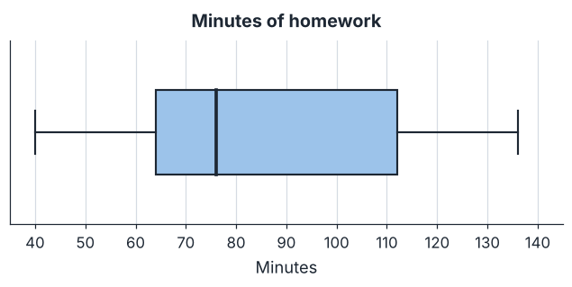
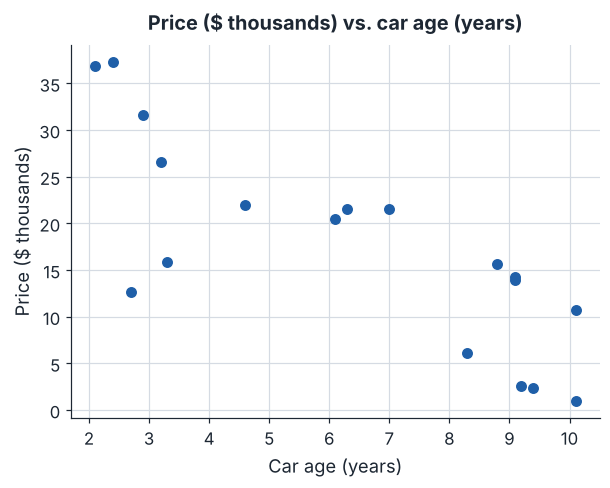
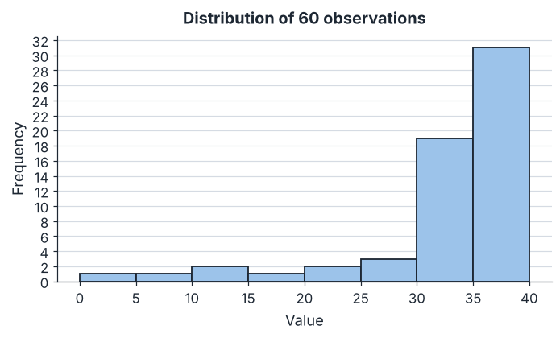

Section I · Multiple choice · 90 minutes
- Stemplot row 3 | 1 4 7 (key 3 | 1 = 31). What is the sum of these values?(A)102(B)312(C)34(D)15
- In a right-skewed data set with one high outlier, the outlier is corrected to a smaller value that is still the maximum. Which statement is true?(A)The mean and standard deviation decrease, while the median and IQR do not change.(B)The mean decreases but the standard deviation increases.(C)Only the median changes.(D)All four statistics decrease.
- Pulse rates (beats per minute) of 14 students: 58, 62, 64, 66, 68, 70, 71, 73, 75, 76, 80, 84, 88, 102. Find the interquartile range (IQR). Use the medians of the lower and upper halves as the quartiles.(A)8.00(B)6.00(C)44.00(D)14.00
- Use the box plot of minutes of homework. About what percent of the values are at least 64?

(A)100%(B)25%(C)75%(D)50% - In a race, lower times are better. Ana ran the 100 m in 13.1 s (team mean 13.8 s, SD 0.5 s) and the 400 m in 61.0 s (team mean 64.0 s, SD 2.5 s). In which race was Ana's performance more impressive relative to her team?(A)100 m, because her z-score of −1.4 is farther below the mean(B)400 m, because her z-score of −1.2 is farther below the mean(C)400 m, because she was 3 seconds faster than the mean(D)100 m, because 13.1 is the smaller time
- Use the two-way table. Among the "Apartment" students, what proportion are in the "Cat" row?
 (A)0.470(B)0.353(C)0.477(D)0.168
(A)0.470(B)0.353(C)0.477(D)0.168 - Which value is closest to the correlation r for the data in the scatterplot?

(A)-0.50(B)-0.80(C)0.50(D)0.05 - An LSRL has slope 2.5 and passes through (10, 40). Predict y at x = 14.(A)35(B)45(C)50(D)64
- A regression of winning percentage on points allowed per game gives ŷ = 182.5 − 1.15x. A team allowed 104 points per game and won 66% of its games. Find the residual. Round to two decimal places.(A)-3.10(B)62.90(C)128.90(D)3.10
- A cumulative relative frequency graph of KenKen times passes through (60 seconds, 0.70). Which statement is correct?(A)The median time is 60 seconds.(B)About 70% of students finished in 60 seconds or less.(C)70 students finished in exactly 60 seconds.(D)About 70% of students took more than 60 seconds.
- Based on the shape of the histogram, which statement is most likely true?

(A)The mean and median are about equal.(B)The distribution has two clear peaks, so a single center is misleading.(C)The mean is greater than the median.(D)The mean is less than the median. - The mean of 6 values is 15. The value 25 is added. What is the new mean? Round to two decimal places.(A)15(B)19.17(C)20(D)16.43
- A company surveys a random sample of its online customers about shipping speed. A manager uses the results to describe all of its customers, including those who shop only in its stores. What is wrong?(A)Nothing; online customers are a random sample of all customers.(B)Online surveys always produce voluntary response bias.(C)The sample was too small.(D)The sample came from online customers only; in-store customers were not in the sampled population, so the results may not apply to them.
- Which property is true of a simple random sample but NOT of a systematic random sample of the same size?(A)Every individual has the same chance of being selected.(B)It requires a list of the population.(C)Every possible group of n individuals has the same chance to be the sample.(D)It uses a random number generator.
- A phone survey calls only landline numbers to estimate the proportion of adults who use streaming services. Which type of bias is most likely?(A)Response bias from a leading question(B)Response bias(C)Bias from a convenience sample(D)Undercoverage
- Researchers compare the asthma rates of children living near highways with those living farther away. What is the response variable?(A)Asthma(B)Distance from a highway(C)The researchers’ conclusion(D)The number of subjects
- An experiment compares 2 brands of batteries, with 1 battery of each brand tested. Brand A lasts longer. Why is this weak evidence?(A)Two treatments are too many.(B)There is no response variable.(C)With only one unit per treatment (no replication), the difference could easily be due to chance variation between individual batteries.(D)Batteries cannot be randomly assigned.
- An experiment on a recovery drink for athletes gives one group a placebo that looks identical. Why use a placebo group?(A)To make sure the subjects were randomly selected(B)To make the groups larger so the study has more power(C)To separate the effect of the treatment from the effect of simply receiving a treatment(D)To remove the need for random assignment
- A researcher has 40 plots: 20 in shade and 20 in sun, and compares two grass seeds. Which randomization is correct for a block design?(A)Plant seed A in all shade plots and seed B in all sun plots.(B)Let the gardener choose the best plots for seed A.(C)Randomly assign 10 shade plots to each seed and 10 sun plots to each seed.(D)Randomly assign 20 of all 40 plots to each seed, ignoring sun.
- Relative frequencies were 0.70, 0.55, and 0.62 after 10, 100, and 1,000 trials (cumulative). Best estimate of the probability?(A)0.62(B)0.55(C)0.70(D)0.623 (average of the three)
- A KenKen app shows a randomly selected puzzle; 20% are “hard.” If you play 5 puzzles, what is the probability that at least one is hard? Round to four decimal places.(A)0.0003(B)0.7732(C)0.6723(D)0.3277
- 30% of students take AP Stats. Of these, 80% plan to major in a STEM field; of other students, 25% plan a STEM major. A randomly chosen student plans a STEM major. What is the probability the student takes AP Stats? Round to four decimal places.(A)0.2400(B)0.3000(C)0.5783(D)0.8000
- To model a probability of 0.37 with random digits, which assignment works?(A)Pairs 00–37 = success(B)Pairs 00–36 = success(C)Digits 0–3 = success(D)Pairs 37–99 = success
- X = the number of pets in a household takes values 0, 1, 2 and 3 with probabilities 0.1, 0.3, 0.45 and k. Find k.(A)0.85(B)0.1(C)0.25(D)0.15
- X = 1 or 5 with probabilities 0.75 and 0.25. Find SD(X). Round to three decimal places.(A)1.732(B)1.5(C)3(D)2
- A binomial distribution has n = 50. For which p is the distribution most nearly symmetric?(A)p = 0.9(B)p = 0.5(C)p = 0.05(D)p = 0.98
- KenKen times are approximately Normal with mean 75 s and SD 20 s. For a random sample of 25 students, find P(x̄ > 80). Round to four decimal places.(A)0.8944(B)0.4013(C)0.0000(D)0.1056
- A survey has a biased sampling frame. What happens if the sample size is increased from 500 to 5,000?(A)The bias disappears.(B)Both bias and variability increase.(C)Nothing changes.(D)Variability decreases, but the bias remains.
- Two estimators of a population mean are both unbiased; estimator A's SE is 1.5 and B's is 3.0. Which is better and why?(A)A, because it has less sampling variability and so gives narrower intervals.(B)Cannot choose without the sample size.(C)They are equally good because both are unbiased.(D)B, because a larger SE is more cautious.
- A student says, “There is a 95% probability that the true mean is between 12.1 and 14.3.” What is wrong with this statement?(A)It should say 5% instead of 95%.(B)After the interval is computed, the true mean is either in it or not; 95% describes the long-run success rate of the method.(C)The interval should be centered at the true mean.(D)Nothing is wrong.
- Two polls of the same population report 52% ± 3% and 47% ± 3%. What is the most reasonable conclusion?(A)One poll must be fraudulent.(B)The true value must be exactly 49.5%.(C)The intervals barely overlap; the difference may reflect sampling variability, different methods, or a real change over time.(D)Both are certainly correct.
- Two one-sample t intervals are built from the same random sample of 12 commute times: a 95% interval and a 99% interval. Which statement is true?(A)The 95% interval is wider because it uses a larger t*(B)The 99% interval is wider because it uses a larger t*(C)The 99% interval is narrower because it is more confident(D)Both intervals have the same width because they use the same data
- Last year 18% of adults in a town read a printed newspaper weekly. A researcher wants to test whether the proportion this year is less than 0.18. Which hypotheses are correct?(A)H₀: p̂ = 0.18; Hₐ: p̂ < 0.18(B)H₀: p = 0.18; Hₐ: p < 0.18(C)H₀: p = 0.18; Hₐ: p ≠ 0.18(D)H₀: p < 0.18; Hₐ: p = 0.18
- A website says 50% of its visitors make a purchase. In a random sample of 25 visitors, 18 made a purchase (p̂ = 0.72). To test H₀: p = 0.5 versus Hₐ: p ≠ 0.5, a student simulated 100 samples assuming H₀ is true. Use the dot plot to estimate the p-value.
 (A)about 0.04(B)about 0.01(C)about 0.72(D)about 0.96
(A)about 0.04(B)about 0.01(C)about 0.72(D)about 0.96 - A test of whether a coin is fair uses p₀ = 0.5; in n = 100 flips, p̂ = 0.6. Find z.(A)0.2(B)4.0(C)1.0(D)2.0
- The figure shows a right-tailed test of H₀: μ = 20 at α = 0.01 when the true mean is 22. Which region’s area is the probability of a Type II error?
 (A)Region 3(B)The unshaded area under the H₀ curve(C)Region 2(D)Region 1
(A)Region 3(B)The unshaded area under the H₀ curve(C)Region 2(D)Region 1 - Why do we pool the sample proportions when computing the test statistic for H₀: p₁ = p₂?(A)Because confidence intervals also use the pooled proportion.(B)Because under H₀ the two proportions are equal, so the best estimate of the common value uses all the data.(C)Because pooling always makes the test more powerful.(D)Because the sample sizes are different.
- A paired t test on before/after weights gives P = 0.002. What does this indicate about the mean difference?(A)The mean difference is exactly 0.002.(B)The test is invalid.(C)Convincing evidence that the mean difference is not 0 (in the direction of Hₐ)(D)The weights did not change.
- A chi-square test for independence uses one random sample of patients at a clinic, classified by blood type and allergy status. State the alternative hypothesis.(A)Hₐ: There is an association between blood type and allergy status for patients at a clinic.(B)Hₐ: The mean blood type equals the mean allergy status for patients at a clinic.(C)Hₐ: There is no association between blood type and allergy status for patients at a clinic.(D)Hₐ: In the sample, blood type and allergy status are associated.
- A random sample of n = 36 batteries has s = 12. Find the standard error of x̄.(A)2(B)0.33(C)6(D)12
- A 95% CI for a mean is (31.2, 36.4). A second researcher using the same data reports a 90% CI. Which interval could be hers?(A)(31.2, 36.4)(B)(32.0, 37.2)(C)(31.6, 36.0)(D)(30.5, 37.1)
- Choose the inference procedure that fits, considering the design and the goal. A random sample of 1,000 phone users reports whether they use a screen-time limit. Estimate the proportion of all phone users who do.(A)One-sample t interval for a mean(B)Chi-square test for independence(C)One-proportion z test(D)One-proportion z interval